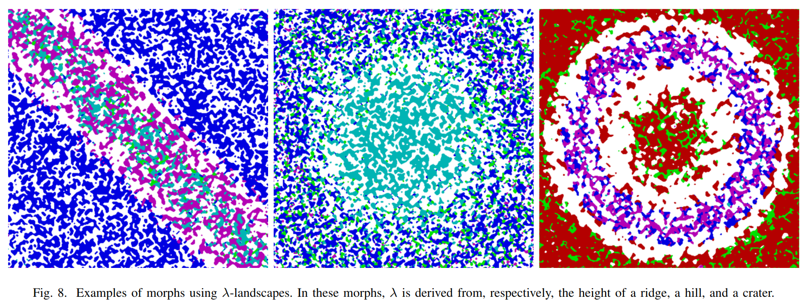

Document
Paper here!
Notes
My own notes
A brief summary
-
Abstract
- CA is used for rapid generation of complex images. But it is hard to control.
- Here is a fashion-based CA that generates cavern-like level maps.
-
Introduction
- Morphing: The continuous change of the CA rule across space. Rules for the CA in this study take the form of square matrices, called competition matrices.
- If two different competition matrices exist, LAMBDA * M + (1 - LAMBDA) * N is a matrice space. During generation, lambda shifts continuously.
-
Background
- In this study, cell space is 101x101. Grid is considered toroidal, 0 and 100 is neighbors.
-
Design of Experiments
- ALPHA = Desired density. BETA = Actual density. Density Modifier = 1 / ((ALPHA - BETA)^2 + 0.4)
- Diversity modifier is basic fitness and entropy multiplied. Diversity Modifier = - SUM(p_i * log2(p_i) , i = 0 to i = n-1)
- Angular modifier. To be honest, it is too hard for me to understand this.
- fitness = Density modifier * Diversity modifier * Angular modifier * Total path length
